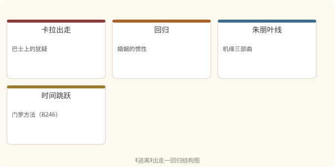

逃离
一、基本信息
| 作者 | 艾丽丝·门罗 |
|---|---|
| 成书/出版 | 2004年出版（Britannica：Runaway (2004)） Alice Munro — Encyclopaedia Britannica（百科全书） |
| 国别/地区 | 加拿大 |
| 时代 | 现当代 · 21世纪 |
| 体裁 | 短篇小说集 |
| 语言 | 英语 |

《逃离》出走—回归结构图（主题·结构图）
二、创作背景
Britannica：'In Runaway (2004) Munro explores the depths of ordinary lives through the use of temporal shifts'（以时间跳跃探入普通生活的深处——B246）。
作者（B246）：2013年诺贝尔文学奖——'master of the contemporary short story'（当代短篇大师）；'the first Canadian to be named the Nobel literature laureate'。
三、内容脉络
八篇故事（篇数通说待核）：卡拉的出走与回归、《机缘》三部曲的朱丽叶线等（通说待核）。
'逃离'的多种形态：婚姻、母亲身份、记忆（通说）。
四、主要人物表
| 人物 | 身份 | 说明 |
|---|---|---|
| 卡拉 | 马场主妇 | 《逃离》篇（通说待核） |
| 朱丽叶 | 学者 | 《机缘》三部曲（通说待核） |
五、主题与艺术特点
- 普通生活的深处（B246：depths of ordinary lives）。
- 女性的出走与折返（通说）。
- 安大略西南的社会文化环境（B246：native southwestern Ontario）。
六、影响与评论
- Britannica：'master of the contemporary short story'；2009布克国际奖（B246）。
Alice Munro — Encyclopaedia Britannica（百科全书） - 短篇文体的当代尊严：门罗让'短篇'进入诺奖叙事（通说）。
Alice Munro — Encyclopaedia Britannica（百科全书）
七、阅读建议
难点
- 时间跳跃的叙事（B246）。
- 开放式结局的克制。
- 《逃离》（北京十月文艺出版社，通说待核）。
先读《逃离》篇 →《机缘》三部曲 → 其余。
八、待核实
- 八篇篇目核对。
- 《机缘》《很快》《沉寂》三部曲标题核对。
- 朱丽叶线人物名核对。
本页主要来源
艾丽丝·门罗的其他收录作品：逃离